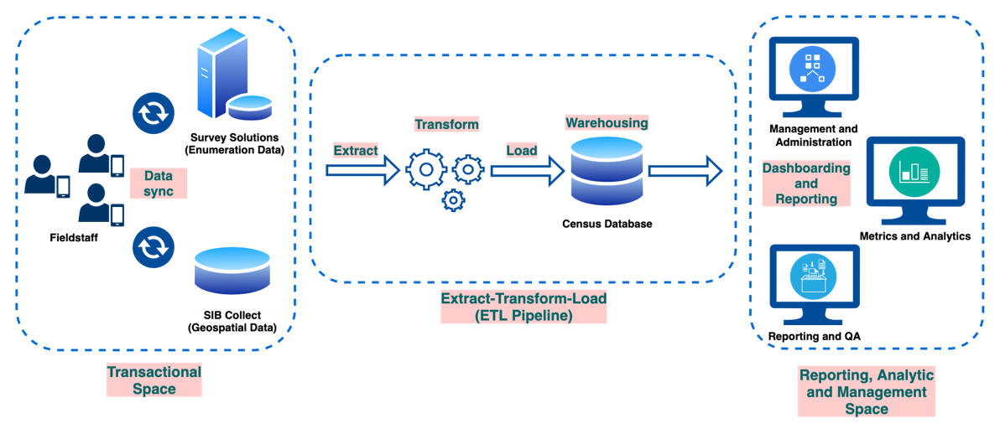
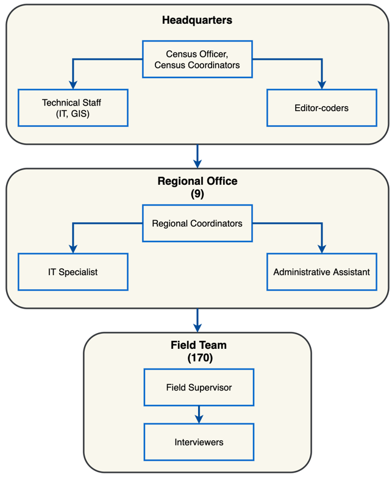
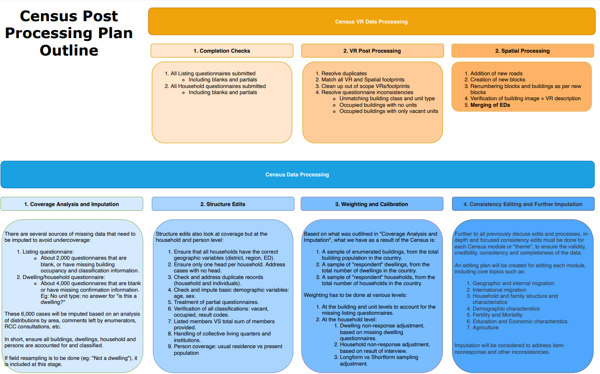
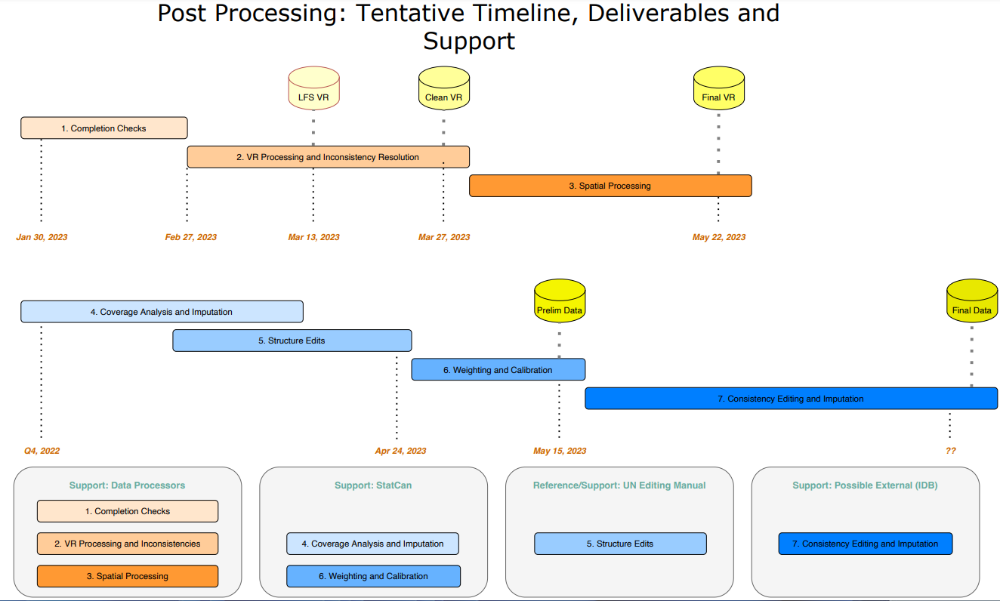

| Region | Interview key (identifier in XX-XX-XX-XX format) | HL1.1: Relationship to the head of the household. | DH4.1: Difficulty seeing even if wearing glasses | hh_wt | cal_lng_wt | qtype |
|---|---|---|---|---|---|---|
| 4 | 33-30-70-59 | 1 | NA | 1.708523 | 0.000000 | shortform |
| 4 | 15-70-83-62 | 3 | NA | 1.708523 | 0.000000 | shortform |
| 4 | 68-85-31-59 | 2 | 1 | 1.616160 | 7.539617 | longform |
| 4 | 57-09-65-86 | 2 | 1 | 1.616160 | 6.496592 | longform |
| 4 | 54-40-55-36 | 3 | NA | 1.708523 | 0.000000 | shortform |
| 4 | 01-25-02-47 | 2 | NA | 1.708523 | 0.000000 | shortform |
| 3 | 56-88-09-96 | 11 | 1 | 1.616160 | 5.087733 | longform |
| 3 | 49-33-55-79 | 7 | NA | 1.708523 | 0.000000 | shortform |
| 3 | 59-42-44-67 | 1 | NA | 1.708523 | 0.000000 | shortform |
| 4 | 20-46-06-94 | 8 | NA | 1.708523 | 0.000000 | shortform |
Census Data Processing
Data Processing for the Belize Population and Housing Census
1. Data collection
1.1 Data Collection Period
The data collection period lasted from May 12, 2022 to January 31, 2023. However, most regions finished between August and November.
| Region | Number of Teams | Finish Date |
|---|---|---|
| Corozal | 17 | September |
| Orange Walk | 17 | September |
| Belize North | 16 | January |
| Belize South | 19 | January |
| San Pedro | 7 | October |
| Cayo | 16 | October |
| Belmopan | 17 | November |
| Stann Creek | 16 | November |
| Toledo | 12 | August |
However, note that there was significant staff attrition and the actual team number and sizes significantly decreased during the fieldwork period.
1.2 Method of Data Collection
Data Collection was performed using CAPI.
- There were two main Collection applications.
- Survey Solutions (World Bank)
- Used for administering the Listing and Household questionnaires.
- Had built-in validations with error/warning messages for unexpected inputs.
- Allowed for offline collection. Synchronization was performed at least daily.
- SIB Collect
- Geo-spatial capture application built by SIB.
- Used for general navigation and identification of enumeration areas, buildings and dwellings.
- Used for geo-spatial capture of new buildings (drawing the polygon) and to update features of existing buildings.
- Survey Solutions (World Bank)
- Enumerators were equipped with tablets, configured with all necessary applications.
- Additional software and tools, such as the Census Dashboard, was available to field supervisors, regional and HQ staff which allowed monitoring and management of Census data collection.
The Census software environment is illustrated below. The diagram shows how the Census Data flowed through collection, synchronization, transformation, storage, and analytics/reporting.

1.3 Data Collection personnel structure
The Census personnel structure consisted of:
- Headquarters
- Consisting of core management and support staff (HR, Finance, Admin, IT, GIS).
- Editor/Coders were also housed at headquarters.
- Nine regional offices
- Consisting of a Regional Census Coordinator (RCC), Assistant Coordinator (ARCC), IT Technicians, and Administrative Assistant (AA).
- 170 total teams
- Each team consisted of 1 field supervisor and 3-4 interviewers (on average).
- The number of teams per region varied according to the size of the region.
A diagrammatic representation of the personnel structure of the census is illustrated below.

2. Use of long form/short form
Due to delays in completing the data collection in the Belize district regions, the decision was made to create a shortened version of the Census questionnaire, to accelerate collection and ensure complete coverage of the country.
The shortened version of the questionnaire was known as the short-form version. See the contents of the short form here.
The full, original version of the questionnaires was known as the long-form version.
Here is a summary of the implementation of the short-form version.
- Households in 147 different EDs in the Belize district received the short-form questionnaires.
- The long-form/short-form split was 25%/%75. That is, a household within these 147 EDs had 25% chance of receiving a long-form questionnaire, and 75% chance of receiving the short-form.
- EDs where less than 10% of households had been completed were selected for short-form sampling.
- However, in practice, several EDs at different levels of completion still underwent short-form sampling for the remaining households in the ED.
- Given that household assignments were generated automatedly through software, the 25-75 split was applied programmatically.
- To be precise, at the moment of generating a household questionnaire for a household, a uniform distribution was sampled to produce a number between 0 and 1. If this number was <= 0.25, a long-form questionnaire was generated. Otherwise, a short-form questionnaire was generated.
- This automation was enabled by the Census Dashboard, will allowed the creation of assignments for a given ED at the push of a button.
The mixture of long-form and short-form questionnaires necessitated an extra level of weighting, which will be discussed later on.
3. Census Weighting
Weighting for the Census dataset was performed meticulously and with guidance from Dave Dolson from StatCan.
Weighting was performed at the stratum level.
For full weighting documentation, see here.
In summary, the following weights were calculated:
- Non-response adjustment at the household level.
- Non-response adjustment at the dwelling level.
- Long-form/Short-form weighting.
- Calibration of longform/shortform weights.
The different weights, their calculation and their use are described below.
| Weight | Description | Calculation | Used in analysis? | Usage |
|---|---|---|---|---|
| dw_response_wt | Non-response adjustment at the dwelling level | total_dwellings / respondent_dwellings | No | As an intermediate input to calculate hh_wt |
| hh_response_wt | Non-response adjustment at the household level | total_hhs / respondent_hhs | No | As an intermediate input to calculate hh_wt |
| hh_wt | combined (the product of) dwelling and household response weights | dw_response_wt * hh_response_wt | Yes | To be used with variables/items that appear in BOTH long-form and short-form questionnaires. Example: age, sex, country of birth. |
| long_wt | weights for longform questionnairs in areas that underwent long-form/short-form sampling | total_hhs/longform_hhs | No | |
| cal_long_wt | calibrated long_wt using hh_size as the calibrator. | Yes | Used with variables/items that ONLY appear in the longform questionnaire. Example: DH1 (disability) |
To see an example of the main weights in action and how they should be used, consider the records below, sampled from the individual census dataset. Notice the following features:
- HL1 appears in all questionnaires (both longform and shortform)
- DH1 only appears in longform questionnaires and is NA in shortforms.
- The calibrated longform weight (cal_lng_wt) drops weights for shortform questionnaires and adds it to longform questionnaires.
Therefore, we note that the proper usage of the two main weights is as follows:
- hh_wt should be used for ALL variables that appear in all (both shortform and longform) quetionnaires (such as HL1). Using cal_lng_wt for these variables would cause shortform records (and their usable data) to be ignored and their weight to be given to the longforms.
- cal_lng_wt should be used for ALL variables that ONLY appear in the shortform (such as DH1). Using hh_wt for these variables would keep the weights for shortforms where these variables are not present and would inflate the NA values.
4. Census Data Processing
Data processing for the Belize Census was a meticulous and expansive operation that involved a wide variety of human personnel, software tools, and processes and methodologies.The main items involved in data processing and editing are outlined below.
- Pre-processing
- Preparation of Maps and Master Building Files (used for creating Listing questionnaires).
- Design and creation of CAPI questionnaire, including validations and skip patterns.
- Creation of R scripts to automated the downloading, processing and preparation of Census data for monitoring and supervisory purposes on an hourly basis.
- During-Collection Processing
- Editing and coding.
- Editor coders were trained to review questionnaires for quality and consistency.
- These editors also entered standard classification codes where necessary.
- Spatial and Listing processing
- IT technicians and data processors were trained to review geospatial and Listing data to identify and fix inconsistencies during collection,
- Software was built to aid in identifying inconsistencies and addressing them.
- Editing and coding.
- Post-processing
- At the end of collection, data was aggregated, merged, restructured, cleaned and processed.
- Data editing rules were created based on the Census Editing Manual and local context and needs.
Extended data processing documentation can be found here.
An flowchart representation of data processing is below.
 
5. Issues encountered with raw census data
The issues revolving Census data were mostly encountered during data collection. However, two of these issues had implications on data processing.
5.1 Missing questionnaires, blank questionnaire, or questionnaires with missing key data
Status: resolved
At the end of the day, to have good Census estimates, it is crucial to have a complete count of buildings, dwellings and households. Non-response adjustment can be applied properly only if the true population of dwellings, households and individuals is known.
There were various scenarios, arising during data collection, that originally presented obstacles to this.
- Missing/Unsubmitted Household Questionnaires.
- Household questionnaires were created for dwellings identified during Listing, but somequestionnaires were never returned.
- Thus, there is no status information about the dwelling occupancy or the household.
- Missing/Unsubmitted Listing Questionnaires
- Listing questionnaires were created for every building in the country, based on the spatial database, but some were never returned.
- Thus, there is no status information about
- If the structure is a building to begin with.
- The building classification and occupancy status.
- The units within a building, including potential dwellings.
- Blank questionnaires or questionnaires with missing data.
- Listing or Household questionnaires were returned by enumerators, but were blank, or had missing key information (building and unit classifications, for example).
The above situations lead to an incomplete picture on the actual number of buildings, dwelling units, and households in the country. To fix this, the SIB team considered implementing either a weighting or an imputation strategy. Following advice from StatCan, a careful imputation strategy was designed to impute the missing information, using the observed distributions of the target variables. The documentation can be found here.
5.2 Discrepancies of Dwelling-unit identification between Listing and Enumeration.
Status: resolved.
- During Listing, dwellings were identified mainly through observation (contact with a household member was not required).
- During Enumeration, a high number of units that were identified as “dwellings” during Listing were now being labeled as “not a dwelling”.
- However, the number of “not a dwelling” was suspiciously high.
- Accordingly, a field verification exercise was designed and performed on a sample of these “not a dwelling” units. The results were used to adjust the dwelling estimates.
- This resulted in somewhat complex weighting and imputation process, which was guided by StatCan.
This item required immediate attention, given that there were 22,000 records that were ORIGINALLY recorded as “dwelling” during the Listing, but subsequently labeled as “Not a Dwelling” during enumeration, or the variable was missing (blank questionnaire).
The documentation regarding this process appears below:
Statcan Strategy Document by David Dolson, StatCan.
Implementation Documentation, by Christian Orellana SIB.
Results of verification, raw summaries.
5.3 Census weighting, and short-form/long-form methodology leading to discrepancies in the total counts of individuals.
Status: in-progress.
As a result of longform weights, and particularly because weighting is done only at the household level, there was a curious side effect where the count of total individuals in when analyzing longform-only variables (using cal_lng_wt) is different than when analyzing universal variables (using hh_wt).
This issue was caused for the below reasons
- The subset of households that received the long-form and short-form questionnaires were not exactly the same in terms of composition (household size, members and sex).
- Shortform households are dropped when using the longform weights, losing precision on the exact household size and composition, as their weight is shared among all longform questionnaires in the household’s weighting stratum.
- These count for individuals for households is now slightly different when using hh_wt (when analysing universal variables), than when using cal_lng_wt (when analyzing longform-only variables).
The longform weightes were subsequently calibrated using household_size as the calibrating variable. This improved the weights but because we cannot account for every single household size, broken down by male/female, then there remain still minor discrepancies.
The team has considered different alternatives to fix this issue:
- Deriving individual weights, could solve the issue because each individual could be receive an adjusted weight to always equal the total number of individuals. However, deriving individual weights is undesirable because that would mean the addition of another two weights to the dataset (individual regular weights and individual long-form weights), leading to a total of four different weights that analysts and data users would need to use when working with the Census dataset.
- A imputation strategy could be created to impute the missing variables in short-form questionnaires. However, the team believes this task to be too lengthy and complex at this point in time, and there are also very important consequences to consider.
The data processing and analysis team are currently researching other alternatives to finalize a fix for this issue.
THIS ISSUE ONLY AFFECTS THE BELIZE NORTH AND BELIZE SOUTH REGIONS, WHICH IS THE ONLY PLACE WHERE THE LONGFORM WEIGHTS ARE USED. THIS ISSUE ALSO ONLY AFFECTS THE ANALYSIS OF LONGFORM-ONLY VARIABLES. AFTER CALIBRATION, THE GROSS COUNT DIFFERENCE IS 35.
5.4 Issues in Household Editing
Editing rules for harmonizing and preparing the Census datasets for analysis were created by the data processing team, using the Handbook on Population and Housing Census Editing as a main guide.
The editing rules and documentation derived can be found here.
The remaining “issues” are simply editing items where the recommended action needs to be confirmed, using research or expert recommendation. Some of these pending edits are below:
- In 0.3% of cases, households reported wall materials that cannot support the reported roof material. For example, sticks or makeshift walls, and concrete roof.
- Recommendations include:
- accept as is, because there might exist concrete columns despite weak wall material.
- Accept wall material as a correct value, and implicitly take the roof material as an incorrect/mistaken value and change the response to Not Reported.
- Recommendations include:
- In 6.6% of Urban households, the main water source was reported as “Private, piped into dwelling”. However, to the team’s knowledge, private water piping is not allowed in Urban areas. Pending confirmation with external sources.
- In the Disability and Health module, the team needs to confirm appropriate age ranges for which the response “Not applicable because of age” is allowed.
- In the education module, 1,000 primary school students reported attending school part time. Research is being done to confirm if any primary school locally does part-time schooling.
Statisticians and analysts are currently working on the best course of action for the above edit items but expert recommendation is welcome.